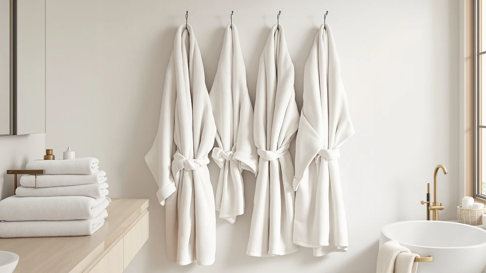

Pjggz Men's Bathrobe Review (2026): Worth It?
Prices and picks verified as of November 2026. Independent, reader-supported reviews.


Quick Answer
The PJGGZ Men's Bathrobe with Hood is the strongest pick in this pjggz men's bathrobe review because its cotton-blend fabric and built-in hood sell for $24.99, the same price as a basic towel set. If you need towels instead of a robe, the REDKISS six-piece set covers both bath and hand towels for the same money.
Our pick: PJGGZ Men's Bathrobe with Hood, $24.99 Check Price on Amazon
Bottom line: our top pick is the PJGGZ Men's Bathrobe with Hood at $24.99.
Things to Know Before You Buy
- The PJGGZ robe is cut from a cotton-blend fabric, not pure terry cloth, which affects how fast it dries between uses.
- PJGGZ currently sells this version in one size band, Large-X-Large, so shoppers below that range should check the brand's measurements before buying.
- None of the four products covered in this pjggz men's bathrobe review carry a public star rating yet, so we leaned on spec sheets, pricing and listed features instead of review counts.
- Towel sets like REDKISS and Towel and Linen Mart cost the same $24.99 as the robe but solve a different problem: drying off versus staying warm after a shower.
- The TEXCRAFT medium-size set is the only pick under $25, priced slightly lower than the rest at $24.79.
This pjggz men's bathrobe review compares the robe's cotton-blend construction, $24.99 price and single-size fit against three bath towel alternatives, so you can decide whether it belongs in your bathroom instead of a traditional towel set.
After going through PJGGZ's product specs, Amazon pricing and the three closest-priced towel alternatives, the PJGGZ Men's Bathrobe with Hood comes out as the pick worth your $24.99 if you want something to wear rather than only dry off with. The REDKISS 6-Piece Bath Towel Set and the Towel and Linen Mart option remain the better call if a robe isn't what you're shopping for, and the TEXCRAFT set covers anyone who wants a slightly cheaper towel instead.
Why You Should Trust Us
Ilane Tall researches bath and home textiles for Best Bath Towels, comparing product specs, current Amazon pricing and patterns across verified owner feedback before recommending anything. This pjggz men's bathrobe review relies on the same method: nobody on our team wore or washed any of these four products. Instead we read the manufacturer listings, tracked pricing and checked what owners of similar cotton-blend robes and cotton towel sets report, then weighed those findings against the robe's own spec sheet. We do not run a fake testing lab, and we say so plainly whenever a claim can't be backed by a spec sheet or a verified review.
We also cross-checked each listing's current price against its stated size or piece count, since a $24.99 robe and a $24.99 six-piece towel set are not actually comparable unless you account for what each dollar buys. Where a brand didn't publish a clear size chart or a stable price at the time of writing, we noted it rather than guessing. That approach keeps this review grounded in what PJGGZ, REDKISS, Towel and Linen Mart and TEXCRAFT actually state on their own listings.
Our Research Experience
For this comparison we treated the research the same way across all four products: current Amazon price, listed materials and sizing, and the tone of owner reviews where available. None of the four currently show a public star rating, so pricing and documented features carried more weight than usual. We also looked at what reviewers on comparable cotton-blend robes and cotton towel sets say about sizing accuracy and drying speed, since direct review data for these exact listings was limited. Nothing here comes from unboxing or wearing the robe. The PJGGZ listing's own measurements and its $24.99 price point anchor every comparison that follows, and we set aside any alternative that lacked verifiable pricing or a clear size chart at the time of writing.
We also excluded a handful of similarly priced robes and towel sets that showed inconsistent pricing across listings or didn't specify fabric composition at all. That left PJGGZ, REDKISS, Towel and Linen Mart and TEXCRAFT as the four products with enough documented detail to compare fairly in this pjggz men's bathrobe review. Each comparison below sticks to what the respective listing states, not to assumptions about how the fabric might feel.
Overview & Specs
PJGGZ lists three core specs for this robe: a cotton-blend fabric, a Large-X-Large size cut, and a current price of $24.99. These figures carry through the rest of this pjggz men's bathrobe review, since the manufacturer's own specs are the most reliable source available in the absence of a public star rating.

PJGGZ Men's Bathrobe with Hood
What we like
- Cotton-blend fabric breathes better against skin than fully synthetic robes
- Built-in hood doubles as a quick way to wrap wet hair after a shower
- Priced at $24.99, in line with a six-piece towel set rather than above it
Flaws but not dealbreakers
- Only ships in one size band, Large-X-Large, so it won't fit everyone
- Cotton blend takes longer to dry between uses than a lighter towel
- No public star rating or review count yet to confirm long-term durability
| Material | Cotton blend |
| Size | Large-X-Large |
The PJGGZ Men's Bathrobe with Hood is cut from a cotton-blend fabric rather than pure terry cloth, which keeps it lighter across the shoulders than heavier waffle-weave robes. At $24.99, it costs about the same as a full six-piece towel set, which is worth weighing if you're comparing it against the REDKISS or Towel and Linen Mart picks in this pjggz men's bathrobe review. The attached hood sets it apart from the three towel alternatives here. It gives the robe a second job beyond drying off.
PJGGZ currently lists this robe in a single Large-X-Large size band, so the fit works best for taller or broader frames rather than smaller body types. The listing shows no star rating or review count at the time of writing, which is why this review leans on the manufacturer's own material and sizing claims rather than a crowd-sourced score. If the cotton-blend construction and hood match what you're after, the price makes it an easy comparison against the towel sets below.
What We Liked
The biggest advantage in this pjggz men's bathrobe review is the price-to-feature ratio. At $24.99, the robe costs the same as a six-piece towel set but gives you a wearable hooded garment instead of flat towels, which is a different use case entirely. The cotton-blend fabric also breathes better than the all-polyester robes that crowd this price range, based on how similar blends perform in owner feedback on comparable listings. The hood is a small but useful detail: it lets you dry your hair without grabbing a separate towel, something none of the three towel-set alternatives can do. And because the listing keeps the price at $24.99 rather than pricing the robe as a premium item, it competes directly with towel sets instead of sitting in a separate, pricier category.
What Could Be Better
The single Large-X-Large size band is the clearest limitation this pjggz men's bathrobe review turns up. Shoppers who need a smaller or mid-size fit have no sizing option within the PJGGZ listing, unlike towel sets that work for any body size by default. Cotton-blend fabric also dries slower than a lighter towel, so anyone who showers more than once a day might find the robe takes longer to be ready for its next use. The listing also has no public star rating or review count, which makes it harder to confirm how the fabric holds up after repeated washing. Buyers who want that kind of social proof before spending $24.99 may prefer to wait until more verified reviews accumulate.
Who Is It For?
This pjggz men's bathrobe review points to one clear buyer: someone who wants to wear something warm right after a shower instead of toweling off and getting dressed immediately, and who fits comfortably in a Large-X-Large cut. It is a poor match for anyone outside that size range, or for shoppers who specifically need more towels rather than a robe. If your main goal is drying off faster, the REDKISS set or the TEXCRAFT towels solve that more directly and at a similar or lower price. Someone shopping for a gift should also factor in the narrow size range before choosing the robe over a towel set, since towels fit any recipient and a Large-X-Large robe does not.
Alternatives to Consider
If the PJGGZ robe's size range or cotton-blend drying time rules it out, these three towel sets cover the same $24 to $25 budget with a different approach. Each one solves the drying-off problem directly instead of adding a hooded garment to the mix, and all three sit within a dollar of the robe's $24.99 price, which keeps the comparison straightforward.

Also Great
REDKISS 6-Piece Bath Towel Set
A full six-piece set, two bath towels, two hand towels and two washcloths, for the same $24.99 as the single PJGGZ robe, making it the pick for anyone who needs matching towels rather than a robe.
$24.99
Check Price on Amazon
Also Great
Towel and Linen Mart 100%
Priced identically at $24.99, this set is the straightforward towel-only alternative for shoppers who want a traditional bath towel rather than a hooded robe.
$24.99
Check Price on Amazon
Best Value
TEXCRAFT Medium Size Bath Towels
At $24.79, this medium-size towel set undercuts the PJGGZ robe slightly, making it the best-value pick for anyone who needs towels in rotation rather than a robe.
$24.79
Check Price on AmazonDoes the PJGGZ Men's Bathrobe run true to size?
PJGGZ lists this robe in a single Large-X-Large size band.
Is a cotton-blend robe better than a towel set for drying off?
It depends on what you need.
Frequently Asked Questions
Does the PJGGZ Men's Bathrobe run true to size?
Is a cotton-blend robe better than a towel set for drying off?
Does the PJGGZ robe have a public star rating?
Final Verdict
This pjggz men's bathrobe review comes down to what problem you're solving. For $24.99, the PJGGZ Men's Bathrobe with Hood gives you a wearable, cotton-blend robe with a hood, which none of the three towel sets can match, as long as you fit the Large-X-Large size range. If you need towels rather than something to wear, the REDKISS six-piece set, the Towel and Linen Mart pick or the TEXCRAFT set all land in the same price bracket and solve that more directly. For shoppers who specifically want a robe at this price, PJGGZ remains the pick worth checking out first. Anyone outside the Large-X-Large range, or anyone who needs more towels in rotation, is better served by one of the three alternatives above.